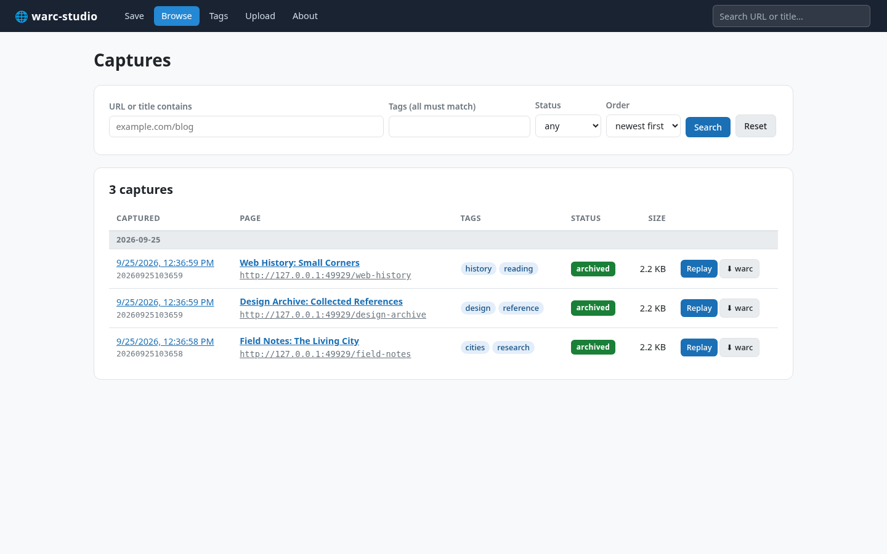

01 / FIND
Browse what you saved.
Search captures by URL or title, filter by tags and status, and switch between newest and oldest first. Every capture has its own timestamp.
- Chronological browsing
- Tags and status filters
- URL capture history
